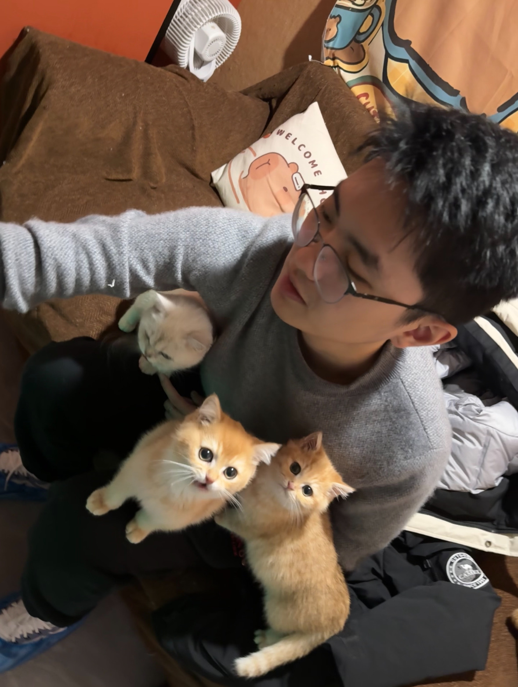

Shanghai Jiao Tong University
Yunuo Chen 陈予诺
Ph.D. student in Computer Science
I am a Ph.D. student at SJTU Media Lab, Shanghai Jiao Tong University, advised by Prof. Wen Gao and Prof. Guo Lu. I received my B.Eng. in Electrical and Computer Engineering from the UM-SJTU Joint Institute, Shanghai Jiao Tong University.
My research focuses on learned image/video compression, generative visual compression, and AIGC.
News
- One paper was accepted to ECCV 2026.
- Two papers were accepted to CVPR 2026.
- Two papers were accepted to ICLR 2026.
- One paper was accepted to NeurIPS 2025.
- One paper was accepted to ICCV 2025 as an Oral presentation.
- One paper was accepted to ICLR 2024.
- One paper was accepted to ICML 2023.
Experience

Research Intern
Microsoft Research Asia (MSRA)
Supervised by Fangyun Wei and Dong Chen.
Topic: lightweight text-to-image and image-editing foundation models.
Research Intern
StepFun (阶跃星辰)
Supervised by Wei Cheng.
Topic: multi-reference and many-to-many image generation.
Publications
Selected first-author or representative works are highlighted below. Equal contribution is marked by *.
Next-Frame Decoding for Ultra-Low-Bitrate Image Compression with Video Diffusion Priors
Reformulates generative image decoding as next-frame prediction from a compact anchor frame, using video diffusion priors for ultra-low-bitrate image compression.
Adaptive Learned Image Compression with Graph Neural Networks
Introduces GLIC, a graph-based learned image compression framework with dual-scale graphs and adaptive connectivity for content-adaptive redundancy modeling.
Content-Aware Mamba for Learned Image Compression
Builds a content-aware state-space model for image compression by combining content-adaptive token permutation with sample-specific global prior injection.
H3D-DGS: Exploring Heterogeneous 3D Motion Representation for Deformable 3D Gaussian Splatting
Proposes a heterogeneous 3D motion representation for deformable 3D Gaussian splatting that decomposes complex scene dynamics into distinct motion components.
Knowledge Distillation for Learned Image Compression
Develops a stage-wise modular distillation framework for learned image compression, reducing model complexity while preserving rate-distortion performance.
SurfSplat: Conquering Feedforward 2D Gaussian Splatting with Surface Continuity Priors
Bing He, Jingnan Gao, Yunuo Chen, Ning Cao, Gang Chen, Zhengxue Cheng, Li Song, Wenjun Zhang
iMontage: Unified, Versatile, Highly Dynamic Many-to-many Image Generation
Zhoujie Fu, Xianfang Zeng, Jinghong Lan, Xinyao Liao, Cheng Chen, Junyi Chen, Jiacheng Wei, Wei Cheng, Shiyu Liu, Yunuo Chen, Gang Yu, Guosheng Lin
Neural Rate Control for Learned Video Compression
Yiwei Zhang, Guo Lu, Yunuo Chen, Shen Wang, Yibo Shi, Jing Wang, Li Song
Bayesian Neural Networks Avoid Encoding Complex and Perturbation-Sensitive Concepts
Qihan Ren, Huiqi Deng, Yunuo Chen, Siyu Lou, Quanshi Zhang
Services
- Conference Reviewer: CVPR 2025/2026, ICCV 2025, ICLR 2025/2026, ECCV 2026, ICML 2026, NeurIPS 2025/2026, AAAI 2025, BMVC 2026
- Journal Reviewer: IEEE TIP, IEEE TCSVT, ACM TOMM
- Workshop Organizer: VCIP 2025 Ultra-Low Bitrate Video Compression Challenge
Honors and Awards
- Outstanding Graduate, Shanghai Jiao Tong University
- Yu Liming Scholarship, UM-SJTU Joint Institute
- Undergraduate Outstanding Scholarship, UM-SJTU Joint Institute
Education
- Ph.D. in Computer Science, Shanghai Jiao Tong University
- B.Eng. in Electrical and Computer Engineering, UM-SJTU Joint Institute, Shanghai Jiao Tong University